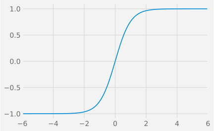

5 Feedforward Neural Networks
We have now arrived at the core of this module: neural networks. The models we have explored so far, from least squares to logistic regression, are not just historical context; they are the actual building blocks of the networks we are about to construct.
Recall the logistic regression model, where the output was given by:
h_{\bf w}({\bf x}) = \frac{1}{1 + e^{-{\bf x}^{\top}{\bf w}}}
This model can be considered our first and simplest example of a neural network.
A neural network, in its simplest form, is what happens when we start stacking these building blocks. Instead of the output of one logistic unit being the final answer, we will use it as an input to another, creating layers of computation. Let’s dive in.
5.1 What is a Feed-Forward Neural Network?
5.1.1 A Graph of Differentiable Operations
To understand why logistic regression can be viewed as a neural network, let us consider a simple case with two input features, x_1 and x_2. The prediction function can be visualised as a network of operations, as depicted in Figure 5.1.
This type of model is known as a feed-forward neural network because it can be represented as a directed acyclic graph (DAG). This graph describes how a set of differentiable operations are composed to form the overall function.
Each node within this graph is referred to as a unit. The initial nodes, or the leaves of the graph, represent either the input values (e.g., x_1, x_2) or the model parameters (e.g., {w_0}, {w_1}, {w_2}). All subsequent units, such as u_1 and u_2, represent the outputs of functions that operate on the preceding units. In this example, u_1 is the output of a linear combination, u_1 = f_1(x_1,x_2,w_0,w_1,w_2) = w_0 + w_1x_1 + w_2x_2, and u_2 is the output of the sigmoid function, u_2=f_2(u_1) = 1/(1 + \mathrm{exp}(-u_1)).
While feed-forward neural networks are defined by their directed acyclic graph structure, it is worth noting that other types of neural networks exist. For example, Hopfield networks (Wikipedia 2025) are based on graphs that contain cycles, leading to recurrent connections. However, these will not be covered in this module. For our purposes, we will focus exclusively on feed-forward neural networks, which cover 99.9% of current research and applications.
5.1.2 Units and Artificial Neurons
The term neural in “neural network” originates from the design of the network’s fundamental units, which are inspired by biological neurons.
An artificial neuron is a specific type of unit that performs a two-step computation. First, it calculates a weighted sum of its inputs (a linear combination). Second, it applies a non-linear function, known as an activation function, to this sum.
A variety of activation functions can be used. Some of the most popular are shown in Figure 5.3 and include the ReLU, sigmoid, and tanh Activation Functions.



Although ReLU, sigmoid, and tanh are historically the most common activation functions, many others exist. In recent years, ReLU and its variants, such as Leaky ReLU, GELU, ELU (Exponential Linear Unit), and Softplus, have become the preferred choice for many deep learning applications.
It is crucial to understand that the units in a network do not have to be neuron-like. As we will explore later, any differentiable function can serve as a unit. Historically, research focused on neuron-type units, which proved to be effective and versatile building blocks. Consequently, much of the literature is based on them. However, the modern definition of a neural network is more general: it is simply a DAG of differentiable functions. Modern deep learning frameworks reflect this by allowing developers to define custom units, provided that their gradients can be computed.
5.2 Biological Neurons
The original concept of artificial neurons was an attempt to create a simplified mathematical model of their biological counterparts. In a biological neuron, signals received by the dendrites are aggregated. This combined signal must then reach a certain threshold to trigger an output spike, a process that bears a resemblance to the behaviour of a ReLU activation function.
Numerous mathematical models have been proposed to capture the complex electrical dynamics of a neuron. One of the most well-known is the Leaky Integrate-and-Fire (LIF) model. It describes the relationship between the input current, I(t), and the change in the neuron’s membrane voltage, V_m(t), over time:
C_{\mathrm {m} }{\frac {dV_{\mathrm {m} }(t)}{dt}}=I(t)-{\frac {V_{\mathrm {m} }(t)}{R_{\mathrm {m} }}}
In the LIF model, the membrane voltage increases as the neuron receives input current from connected neurons. If the voltage reaches a specific threshold, the neuron “fires,” producing an output voltage spike. Immediately after firing, the membrane potential is reset to a lower resting value. Models that exhibit this behaviour are known as spiking neuron models. Figure 5.5 provides a schematic of the LIF model as an electrical circuit (left) and illustrates how the membrane potential responds to a constant input current (right).

Figure 5.6 illustrates the dynamics of a network of spiking neurons. Each neuron in the network receives sequences of voltage spikes from its connected peers. It integrates these incoming signals, causing its own membrane potential to rise. Once its potential reaches the firing threshold, it emits its own spike, which is then transmitted to other neurons.
A key feature of the LIF model is the “leaky” nature of the membrane: in the absence of sufficient input stimuli, the membrane potential gradually decays back to its resting state. This implies that the input signal must have a certain minimum intensity to make the neuron fire. For example, in Figure 5.6, the spikes arriving after time t_1 are not frequent or strong enough to trigger an output.
Figure 5.7 shows the neuron’s output firing rate as a function of a constant input intensity, for different levels of noise. This plot clearly shows two operational regimes: below a certain input threshold, the firing rate is close to zero; above the threshold, the rate increases approximately linearly with the input intensity.

This thresholding behaviour is precisely what artificial activation functions aim to capture. The response curves in Figure 5.7 are strikingly similar in shape to common activation functions like ReLU, Leaky ReLU, and Softplus. The figure also reveals that the precise shape of this response curve is influenced by the characteristics of the input signal, such as its noise level.
This highlights a functional equivalence between the abstract models used in deep learning and the dynamics of biological spiking neurons. It is possible to convert a conventional Deep Neural Network (DNN) into an equivalent Spiking Neural Network (SNN). This is an active area of research, driven by the potential for SNNs to be implemented in highly energy-efficient hardware.
The main takeaway is that the artificial neurons used in DNNs are reasonable functional approximations of their biological counterparts. However, it is important to remember that this biological connection is primarily an inspiration. For the purposes of this module, it is most productive to view DNNs from a mathematical perspective: as graphs of differentiable operations that allow you to build complex, learnable functions.
5.3 Deep Neural Networks
Having defined the basic unit, we can now combine multiple units to construct a network. One of the earliest and most fundamental network architectures is the Multi-Layer Perceptron (MLP), as illustrated in Figure 5.8.

In this diagram, each blue circle represents a neuron, which includes its own activation function. Any unit that is not an input or an output is referred to as a hidden unit. These hidden units can be interpreted as learned intermediate representations of the input data.
Neural networks are commonly, though not exclusively, organised into layers. In a layered architecture, the outputs of all units in one layer typically serve as the inputs for the subsequent layer.

Figure 5.9 shows a network with two hidden layers arranged sequentially. When every unit in a layer is connected to every unit in the preceding layer, it is known as a Dense Layer or a Fully Connected Layer. This is a common but not the only type of layer. In the next chapter, we will introduce another important type: the convolutional layer.
A network with two or more hidden layers, such as the one in Figure 5.9, is classified as a deep feed-forward neural network. The exact point at which a network becomes “deep” is not universally agreed upon. However, the distinction is historically significant because, before the development of the backpropagation algorithm (which we will discuss shortly), there was no effective method for training networks with more than one hidden layer.
5.4 Universal Approximation Theorem
The Universal Approximation Theorem (Hornik, 1991) is a foundational result in the theory of neural networks. It states that:
A neural network with just one hidden layer and a linear output unit can approximate any continuous function to an arbitrary degree of accuracy, provided the hidden layer has a sufficient number of units.
This powerful result holds for a wide range of activation functions, including sigmoid and tanh. For an intuitive explanation of why this theorem holds, please refer to Appendix B.
The theorem provides a powerful guarantee: neural networks are, in principle, capable of modelling almost any continuous relationship in data. It suggests that we can always improve the model’s accuracy by simply adding more hidden units.
However, while the theorem guarantees that a single hidden layer is sufficient, modern practice has shown that deeper networks (with multiple hidden layers) are often far more efficient. They can typically achieve the same or better performance with significantly fewer total parameters and often generalise better to unseen data.
Therefore, rather than simply increasing the number of units in a single layer (a “wide” network), it is often more effective to carefully design the network’s architecture. This involves deciding on the number of layers (the “depth”), the number of units in each layer, and how these units are interconnected.
This field of network design, known as neural architecture search, is a major area of contemporary research. We know that neural networks are universal approximators; the central challenge now is to design architectures that are not only powerful but also efficient to train and that generalise well to new, unseen data.
5.5 Example
Let us explore a practical example using the TensorFlow Playground (playground.tensorflow.org). Figure 5.10 shows a network designed to solve a non-linear classification problem. The network has three hidden layers with 8, 8, and 2 units, respectively.

The input features are the raw x and y coordinates. As we can see by inspecting the outputs of the units, the network learns progressively more complex features. The units in the first hidden layer learn to create simple linear decision boundaries.
The second hidden layer then combines these linear boundaries to form more complex, non-linear regions.

Finally, the third hidden layer constructs even more sophisticated features.

This hierarchical learning ultimately allows the network to capture the intricate spiral pattern of the data and produce the correct classification.

This example illustrates one of the key properties of deep neural networks: their ability to automatically learn a hierarchy of features. As data propagates through the network, the features become progressively more abstract and complex. This is why deep networks, despite being potentially harder to train, are often more powerful and tend to generalise better than their shallow counterparts.
5.6 Training
At its core, a neural network implements a function f that maps an input vector {\bf x} = (x_1, \dots, x_p) to an output vector {\bf y} = (y_1, \dots, y_r). This mapping is determined by a set of learnable parameters, or weights, {\bf w} = (w_1, \dots, w_q):
f(x_1, \cdots, x_p, w_1, \cdots, w_q) = (y_1,\cdots, y_r)
Figure 5.15 shows an example of a computation graph for evaluating such a model. To illustrate the generality of this framework, the units in this graph are not restricted to be standard neurons but can be arbitrary differentiable functions. For example, one could define u_7 as u_7: (u_1,u_2,u_3,u_4) \mapsto \cos(u_1+u_2+u_3)\exp(-2u_4) and u_8 as u_8: (u_1,u_2,u_3,u_4) \mapsto \sin(u_1+u_2+u_3)\exp(-3u_4).
To emphasise the uniformity of the graph representation, all values in this example—inputs, weights, and intermediate outputs—are denoted by u_j, where j is the unit’s index. In this specific graph, an input feature vector {\bf x}_i=[u_1,u_2,u_3]^{\top} is processed using weights {\bf w}=[u_4,u_5]^{\top} to produce the output vector f({\bf x}_i, {\bf w})=[u_{12},u_{13},u_{14}].

The goal of training is to find the optimal set of weights {\bf w} that makes the network’s predictions accurate. This is achieved by first evaluating the network’s output f({\bf x}_i, {\bf w}) for a given input {\bf x}_i from the training data. This prediction is then compared to the true, observed result {\bf y}_i using a loss function, E, which quantifies the error.
Typically, the total loss is aggregated over the entire dataset of n observations: E({\bf w}) = \sum_{i=1}^n e(f({\bf x}_i, {\bf w}), {\bf y}_i), where e(\cdot, \cdot) is the loss function for a single observation.
The computation graph for training on a single observation can now be constructed, as shown in Figure 5.16. This graph is an extension of the evaluation graph, with the network’s output units now connected to a final unit that computes the loss.

To be precise, Figure 5.16 depicts the computation for a single observation. The graph for the entire training process would involve replicating this structure for all observations and aggregating their individual losses to compute the total loss, E.
To find the optimal weights {\bf w}, we use an iterative optimisation algorithm, most commonly gradient descent. Starting from a random initial set of weights {\bf w}^{(0)}, the algorithm repeatedly updates them in the direction that minimises the loss:
{\bf w}^{(m+1)} = {\bf w}^{(m)} - \eta \frac{\partial E}{\partial {\bf w}}({\bf w}^{(m)}) Here, \frac{\partial E}{\partial {\bf w}} is the gradient of the total loss with respect to the weights. It indicates the direction of steepest ascent of the loss function. The scalar \eta is a hyperparameter called the learning rate, which controls the size of the step we take in the opposite direction of the gradient. Choosing an appropriate learning rate is crucial for successful training.
Therefore, any neural network can be trained using gradient descent, provided we have an efficient method for computing the gradient of the loss function with respect to every weight in the network, \frac{\partial e}{\partial {\bf w}}. This is precisely the problem that the backpropagation algorithm solves.
5.7 Backpropagation
The backpropagation algorithm, often shortened to “backprop”, was popularised in a seminal 1986 paper by David Rumelhart, Geoffrey Hinton, and Ronald Williams. It provides an efficient way to compute the gradients required for training.
Rumelhart, David E., Geoffrey E. Hinton, and Ronald J. Williams. “Learning representations by back-propagating errors.” Cognitive Modeling 5.3 (1988): 1.
5.7.1 Computing the Gradient
Why do we need a special algorithm for computing the gradient? A naive approach would be to compute the partial derivative with respect to each weight w_{i} individually using numerical differentiation (the finite difference method): \frac{\partial e}{\partial w_{i}} \approx \frac{e(\cdots, w_{i}+\varepsilon, \cdots) - e(\cdots, w_{i}, \cdots)}{\varepsilon} where \varepsilon is a very small number. While this method is simple to implement, its computational cost makes it impractical for neural networks.
A modern deep neural network can easily have hundreds of millions of parameters. To compute the full gradient using this numerical approach, we would need to evaluate the entire network once for each parameter. For a network with 100 million parameters, this would mean 100 million forward passes through the network just to perform a single weight update. Clearly, this is computationally infeasible.
In contrast, backpropagation can compute the exact gradient for all parameters simultaneously in approximately the time it takes to perform just two forward passes. The efficiency of backpropagation is what transformed neural networks from a theoretical curiosity into a practical and powerful machine learning technique.
The process of computing the output of a network for a given input is called forward propagation (or a forward pass). Information flows from the input layer, through the hidden units, to the output layer. During training, the forward pass extends all the way to the final loss unit, producing a scalar error value e({\bf w}).
The backpropagation algorithm then begins. It uses the chain rule from calculus to efficiently propagate gradient information backwards, starting from the final loss unit and moving all the way back to the network’s weights.
5.7.2 The Chain Rule
Let us briefly recall the chain rule. For a simple composition of functions, such as z = f(y) where y = g(x), the derivative of z with respect to x is found by multiplying the derivatives of the constituent functions: \frac{dz}{dx} = \frac{dz}{dy}\frac{dy}{dx} = f'(y)g'(x) = f'(g(x))g'(x)
For multivariate functions, the chain rule is slightly more complex. Suppose z is a function of several variables, z=f(u_1, \dots, u_n), where each u_k is itself a function of x, u_k=g_k(x). The derivative of z with respect to x is then the sum of the contributions from each path:
\frac{\partial z}{\partial x} = \sum_k \frac{\partial z}{\partial u_k} \frac{\partial u_k}{\partial x}
Example 5.1 (Chain-Rule) Assume that u(x, y) = x^2 + y^2, y(r, t) = r \sin(t) and x(r,t) = r \cos(t), then we can compute {\frac {\partial u}{\partial r}} as follows:
\begin{split} {\frac {\partial u}{\partial r}} &={\frac {\partial u}{\partial x}}{\frac {\partial x}{\partial r}}+{\frac {\partial u}{\partial y}}{\frac {\partial y}{\partial r}} \\ &=(2x)(\cos(t))+(2y)(\sin(t)) \\ &=2r(\sin ^{2}(t)+\cos^2(t))\\&= 2r \end{split} \tag{5.1}
5.7.3 Back-Propagating with the Chain-Rule
Let us now apply the chain rule to our neural network example to see how backpropagation works.
The process starts after a full forward pass has been completed, meaning all unit values, including the final loss e, have been computed. The first step of backpropagation is to compute the gradient of the loss with respect to the inputs of the loss function unit. In our example, these are \frac{\partial e}{\partial u_{12}}, \frac{\partial e}{\partial u_{13}}, and \frac{\partial e}{\partial u_{14}}. Since e is a direct function of u_{12}, u_{13}, u_{14}, these initial gradients are straightforward to compute.
For instance, if the loss function is the squared error e(u_{12},u_{13},u_{14}) = (u_{12}-a)^2 + (u_{13}-b)^2 + (u_{14}-c)^2, then the partial derivatives are simply: \frac{\partial e}{\partial u_{12}} = 2(u_{12} - a) \quad, \frac{\partial e}{\partial u_{13}} = 2(u_{13} - b) \quad, \frac{\partial e}{\partial u_{14}} = 2(u_{14} - c).
Now that we have the gradients “at the end” of the network, we can work backwards. For instance, how can we compute the gradient with respect to an earlier unit, such as \frac{\partial e}{\partial u_{10}}?
We use the chain rule as in Equation 5.1. In our graph, unit u_{10} is an input to units u_{12}, u_{13}, and u_{14}. Therefore, its gradient is: \frac{\partial e}{\partial u_{10}} = \frac{\partial u_{12}}{\partial u_{10}} \frac{\partial e}{\partial u_{12}} + \frac{\partial u_{13}}{\partial u_{10}} \frac{\partial e}{\partial u_{13}} + \frac{\partial u_{14}}{\partial u_{10}} \frac{\partial e}{\partial u_{14}}
The term \frac{\partial u_{14}}{\partial u_{10}} is the local gradient of the unit u_{14} with respect to its input u_{10}. If, for example, the function for u_{14} was a linear combination u_{14} = u_5 + 0.2 u_{10} + \dots, then this local gradient would simply be 0.2.
By repeatedly applying this process, we can propagate the gradients backwards through the network, computing the gradient for each node one layer at a time.
Backpropagation is a remarkably efficient algorithm for computing the gradient of a scalar-valued function with respect to all inputs of a computation graph. The computational complexity of backpropagation is proportional to the number of operations in the forward pass. For most common network architectures, this is a linear function of the number of units, making it extremely scalable. It is this efficiency that makes training deep neural networks with millions of parameters computationally feasible.
5.7.4 Vanishing Gradients
Despite the efficiency of backpropagation, a significant challenge arises when training very deep networks: the vanishing gradient problem.
Hochreiter, S. (1991). Untersuchungen zu dynamischen neuronalen Netzen (PDF) (diploma thesis). Technical University Munich, Institute of Computer Science.
Consider a deep network with many layers, for instance, the 6-layer network shown below:

To compute the gradient of the loss with respect to an early weight w, the chain rule involves a long product of derivatives from each subsequent layer: \frac{de}{dw} = \frac{de}{du_6}\frac{du_6}{du_5}\frac{du_5}{du_4}\frac{du_4}{du_3}\frac{du_3}{du_2}\frac{du_2}{du_1}\frac{du_1}{dw} If any of the terms in this product are small (i.e., less than 1), the overall product will shrink exponentially as it is propagated backwards. This can cause the gradient to become extremely small, or “vanish,” by the time it reaches the early layers of the network.


As shown in Figure 5.19, the derivatives for the sigmoid and tanh functions are close to zero for most of their input range. When a neuron’s input falls into this “saturated” region, its local gradient will be close to zero. During backpropagation, this small gradient will be multiplied with others, increasing the risk of the overall gradient vanishing. When the gradient \frac{de}{dw} becomes close to zero, the weight updates become negligible, and the network effectively stops learning.
The vanishing gradient problem is a fundamental obstacle in training deep networks. It is one of the primary reasons that the ReLU activation function has become popular. Since the derivative of ReLU is 1 for all positive inputs, it is less prone to causing gradients to shrink. Many modern network architectures, such as Residual Networks (ResNets) and Long Short-Term Memory networks (LSTMs), incorporate specific mechanisms designed to mitigate the vanishing gradient problem.
5.8 Optimisations for Training Deep Neural Networks
We have established that network weights can be trained using gradient descent, with the gradients being computed efficiently by the backpropagation algorithm. However, a major challenge remains: the resulting objective functions to be optimised are highly complex and non-convex. Standard gradient descent is not guaranteed to find a global minimum; it can get stuck in poor local minima or saddle points.
Consequently, tuning the training process is a critical part of developing any neural network application. There is no single “best” set of hyperparameters; finding a good combination often requires experimentation and a degree of trial and error. Fortunately, a range of optimisation strategies and regularisation techniques have been developed to improve the speed and stability of the training process.
5.8.1 Mini-Batch and Stochastic Gradient Descent
Recall that the total loss is typically the average of the individual losses over all n observations in the training set:
E({\bf w}) = \frac{1}{n} \sum_{i=1}^n e(f({\bf x}_i, {\bf w}), {\bf y}_i)
To compute the true gradient of the total loss E, we must average the individual gradients over the entire dataset. This approach becomes computationally expensive and slow when the dataset is large, as it requires processing every single sample before making one update to the weights.
A more practical and widely used approach is mini-batch gradient descent. Instead of the entire dataset, the gradient is estimated using a small, random subset of the data called a mini-batch. For example, with a batch size of 16, the gradient is approximated using the average over just 16 samples. The weights are updated, and then the gradient is computed for the next mini-batch.
In the extreme case where the batch size is 1, the gradient is estimated based on a single sample at a time. This method is known as Stochastic Gradient Descent (SGD).
Smaller batch sizes allow for more frequent weight updates, which can speed up convergence. The gradient estimate is also “noisier” because it is based on fewer samples. This noise can be beneficial, as it can help the optimiser escape from sharp, poor local minima. However, it can also make the convergence path erratic and prevent the optimiser from settling into a good minimum.
An epoch is defined as one full pass through the entire training dataset. For a dataset of size n and a batch size of B, one epoch consists of n/B gradient descent steps (or iterations). It is standard practice to shuffle the training data at the beginning of every epoch to ensure that the mini-batches are different each time, preventing cyclical behaviour and improving convergence.
5.8.2 More Advanced Gradient Descent Optimizers
Vanilla gradient descent can be inefficient in certain common scenarios. For example, as illustrated in Figure 5.20, if the loss function landscape contains long, narrow ravines, the optimiser may oscillate back and forth across the steep walls of the ravine while making only slow progress along the bottom towards the minimum.

As illustrated in the figure, the direction of steepest descent (the negative gradient) does not always point directly towards the minimum, leading to an inefficient, zig-zagging path.
One common technique to improve convergence is to use a learning rate schedule, where the learning rate \eta is gradually decreased over the course of training. This allows for larger steps at the beginning and smaller, more precise steps as the optimiser approaches a minimum.
Another powerful approach is to incorporate momentum. This technique helps to accelerate progress along shallow gradients and dampen oscillations. It achieves this by adding a fraction of the previous update vector to the current one, creating an exponentially weighted moving average of the gradients: \begin{align*} {\bf v}^{(m+1)} &= \mu {\bf v}^{(m)} - \eta \frac{\partial E}{\partial {\bf w}}({\bf w}^{(m)}) \\ {\bf w}^{(m+1)} &= {\bf w}^{(m)} + {\bf v}^{(m+1)} \end{align*} with \mu\approx 0.9 controlling the moving average.
Many other, more sophisticated optimisation algorithms have been developed, each with its own strategy for adapting the learning rate or update rule. Popular examples include Nesterov Accelerated Gradient (NAG), Adagrad, RMSprop, and Adam.
Adam (Adaptive Moment Estimation) and its variant Nadam are currently among the most widely used and effective optimisers, often providing good results with little hyperparameter tuning. However, the best choice of optimiser is problem-dependent, so it is always good practice to experiment with a few different ones.
5.9 Constraints and Regularisers
5.9.1 L2 Regularisation
L2 regularisation is the most common form of regularisation. It is the Tikhonov regularisation used in linear regression. It works by adding a penalty term to the loss function that is proportional to the square of the weights:
E'({\bf w}) = E({\bf w}) + \lambda \sum_i w_i^2
This penalty discourages very large weights, leading to a “simpler” model that is less likely to overfit.
5.9.2 L1 Regularisation
L1 regularisation is another common technique. It penalises the absolute value of the weights:
E'({\bf w}) = E({\bf w}) + \lambda \sum_i |w_i|
A key property of L1 regularisation is that it encourages sparsity; that is, it tends to drive many of the weights to become exactly zero. This can be useful for feature selection and for simplifying the network model (see Appendix C).
5.10 Dropout & Noise
One of the most effective ways to combat overfitting is to train on more data. When collecting more data is not feasible, we can artificially augment the existing dataset. A simple way to do this is to create new training examples by adding a small amount of random noise (e.g., from a Gaussian distribution) to the input features of the original samples.
This idea can be taken a step further by injecting noise not just at the input layer, but also to the activations of the hidden units during the training process.
A very effective and widely used regularisation technique that builds on this idea is dropout. During each training step, dropout randomly sets the output of a fraction of the units in a layer to zero. This is equivalent to training a large ensemble of smaller networks that share weights, which prevents complex co-adaptations between neurons and forces the network to learn more robust features.
5.11 Monitoring and Training Diagnostics
Training a deep neural network can be a lengthy process, taking anywhere from hours to several days or even weeks. It is therefore essential to carefully monitor the process to ensure it is proceeding correctly. Tracking metrics like the loss function over time is crucial for diagnosing potential problems.
As we saw with simpler models, the training loss curve can reveal a lot about the learning process. A rapidly fluctuating or increasing loss suggests that the learning rate is too high, causing the optimiser to overshoot minima or even diverge. Conversely, a very slowly decreasing loss indicates that the learning rate is too low, and the training will be impractically slow (see Figure 5.21).
Furthermore, it is vital to monitor performance on a separate validation set. A significant gap between the training performance and the validation performance is a clear indicator of overfitting: the model has learned the training data too well, including its noise, and has failed to generalise to new, unseen data. Figure 5.22 illustrates this phenomenon.

5.12 Takeaways
Deep Neural Networks provide a powerful framework for learning complex functions by composing simple, neuron-like units into a layered network.
The Universal Approximation Theorem guarantees that even a single-layer network is, in principle, sufficient to approximate any continuous function.
However, modern practice shows that deep architectures are more parameter-efficient and generalise better. A key research challenge is designing network architectures that are both powerful and trainable, overcoming issues like the vanishing gradient problem.
The network’s weights are trained using gradient-based optimisation, where the computationally expensive gradient calculation is made feasible by the efficient backpropagation algorithm.
Training is a complex process. The non-convex nature of the resulting loss functions means that convergence to a good solution is not guaranteed. Careful monitoring, along with the use of advanced optimisation and regularisation techniques, is essential. Ultimately, training deep networks often involves a significant amount of experimentation.
5.13 Useful Resources
- Deep Learning (MIT press) from Ian Goodfellow et al. See chapters 6, 7 & 8.
- Brandon Rohrer YouTube channel
- 3Blue1Brown YouTube video (2017): But what is a neural network? | Deep learning chapter 1
- 3Blue1Brown YouTube video (2017) Gradient descent, how neural networks learn | Deep Learning Chapter 2
- Stanford CS class CS231n
- Tensorflow playground
- Michael Nielsen’s webpage
Exercises
Exercise 5.1 Consider a feedforward neural network composed entirely of binary neurons. A binary neuron, as defined, uses a step activation function:
\text{output} = [ \mathbf{x}^{\top}\mathbf{w} > 0 ] = \begin{cases} 1 & \text{if } \mathbf{x}^{\top}\mathbf{w} > 0 \\ 0 & \text{if } \mathbf{x}^{\top}\mathbf{w} \le 0 \end{cases}
where \mathbf{x} is the input vector and \mathbf{w} is the weight and bias vector.
▶ Demonstrate that if all the weights and biases \mathbf{w} in such a network are multiplied by a positive constant c > 0, the overall output behavior of the network remains unchanged.
Exercise 5.2 Consider a deep neural network (DNN) where all neurons are binary neurons, each employing the step activation function defined in Exercise 1.
Now, imagine replacing every binary neuron in this DNN with a sigmoid neuron, which has an output given by:
\text{output} = \frac{1}{1 + \exp(-\mathbf{x}^{\top}\mathbf{w})}
▶ Show that by multiplying the weights and biases of each sigmoid neuron by a sufficiently large positive constant c > 0, the behavior of the new sigmoid-based DNN can arbitrarily approximate the original binary neuron DNN.
Exercise 5.3 Consider a pre-trained three-layer neural network designed to classify single digits (0-9). The third layer (output layer of the original network) has 10 neurons, where each neuron’s activation corresponds to the probability or confidence of a specific digit. We are given that for a correctly classified digit, the corresponding output neuron has an activation of at least 0.99, while all other incorrect output neurons have activations less than 0.01.
▶ Design an additional output layer (the “bitwise representation layer”) that converts the output of the third layer into a 4-bit binary representation of the recognised digit.
Exercise 5.4 Consider the Exclusive OR (XOR) logical operation. It outputs 1 if the inputs are different, and 0 if they are the same. The truth table for XOR with two binary inputs (x_1, x_2 \in \{0, 1\}) is:
| x_1 | x_2 | Output (XOR) |
|---|---|---|
| 0 | 0 | 0 |
| 0 | 1 | 1 |
| 1 | 0 | 1 |
| 1 | 1 | 0 |
▶ Prove that a single binary neuron cannot correctly compute the XOR function.
▶ Design a small feedforward neural network using only binary neurons that can compute the XOR function. Specify the number of layers, the number of neurons in each layer, and provide a set of weights and biases for all connections.
Exercise 5.5 Briefly explain why the Universal Approximation theorem requires the hidden layer neurons to have non-linear activation functions. What would happen if all neurons in the network used only linear activation functions?
Exercise 5.6 Consider a single sigmoid neuron with input x, weight w, and bias b. The output \hat{y} is given by:
\hat{y} = \sigma(wx + b) = \frac{1}{1 + \exp(-(wx + b))}
Suppose we are training this neuron to predict a target value y \in \{0, 1\}. We use the L2 loss function:
E = (\hat{y} - y)^2
Our goal is to adjust w and b to minimize E using gradient descent.
▶ Derive the partial derivative of the cost function E with respect to the weight w, i.e., calculate \frac{\partial E}{\partial w}
▶ Derive the partial derivative of the cost function E with respect to the bias b, i.e., calculate \frac{\partial E}{\partial b}.
▶ Write down the update rules for w and b using gradient descent with a learning rate \eta.